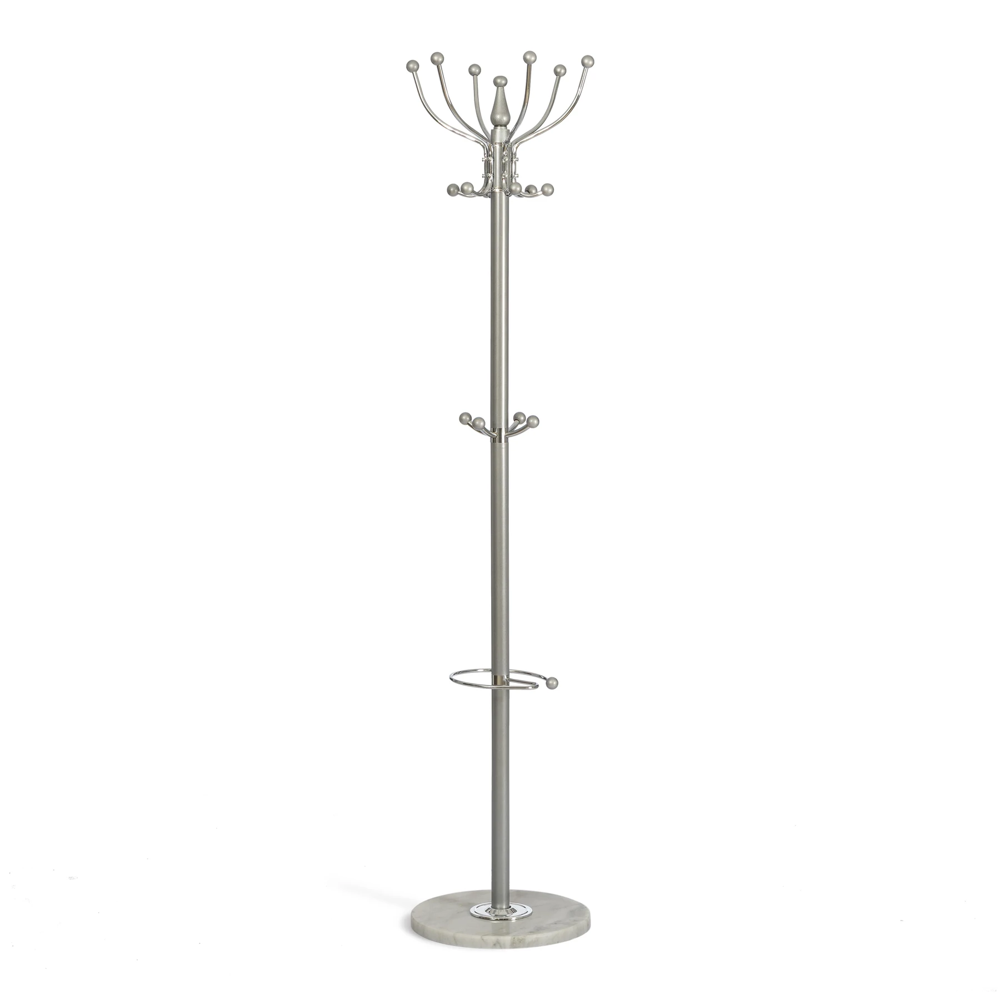
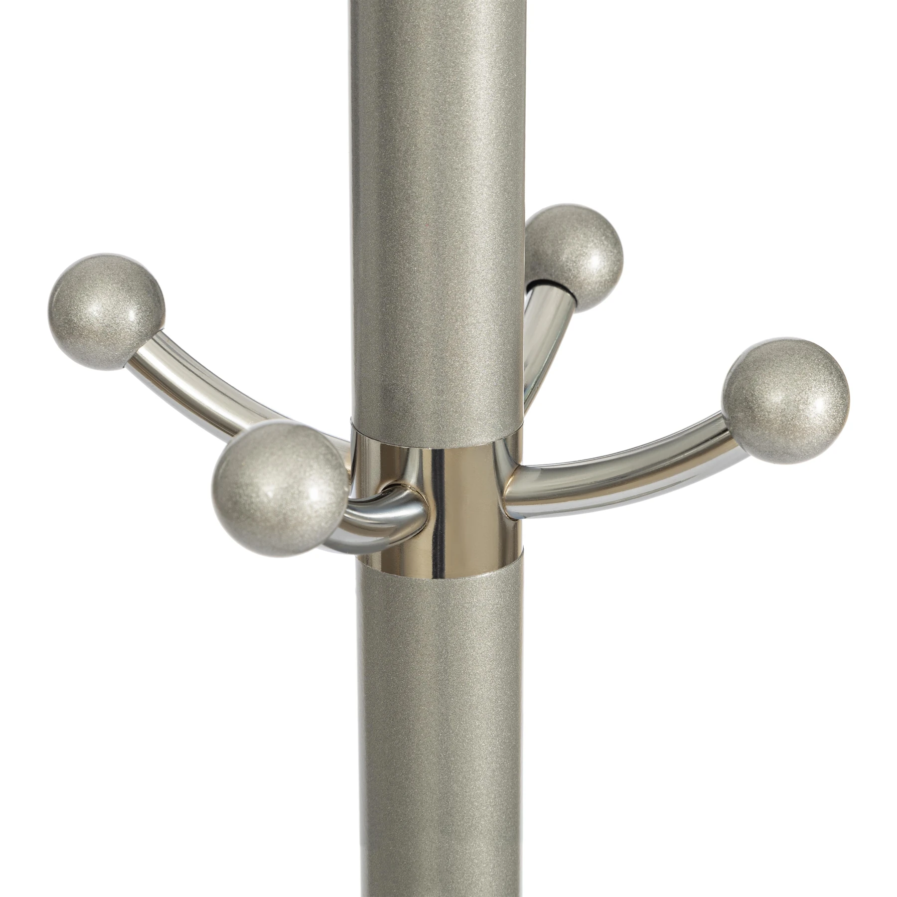
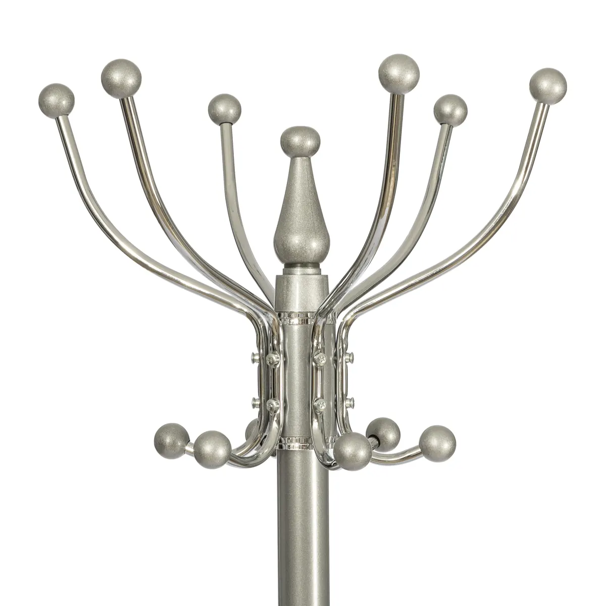

Большой объём данных
Множество моделей, модулей, опций и категорий материала складываются в единую логику расчёта.
VISUAL DIRECTION · AI · PRODUCT · E-COMMERCE
Помогаю превращать сложные задачи в понятные визуалы, лендинги, AI-инструменты и e-commerce продукты — от идеи до рабочего результата.
Смотреть проекты →
Форма, ткань и детали согласованы до запуска в производство.

Подача, которая сокращает путь от интереса к решению.
Специализированный GPT для сложных конфигураций, проверки и документов.
// price → modules → material → check → total01 · ОТУТТО / REAL CLIENT TASK
Для реального заказа вместе с клиентом и дизайнером была собрана индивидуальная конфигурация. Визуализация позволила заранее согласовать пропорции, материал, кант и фигурные ножки.
// supporting process
Исходные материалы остаются вторым планом: реальный диван, разметка деталей и выбранная ткань показывают, из чего появился финальный образ.


Сохраняются параметры именно той конфигурации, которую согласовали с дизайнером.
Образ строится по реальной ткани и заданной схеме контрастного канта.
После согласования визуал передаётся фабрике вместе с технической информацией заказа.
02 · PALERMO / COMMERCIAL DESIGN
Коммерческий материал соединяет эмоцию и конкретику: размер, ткань, варианты стоимости, предоплату и аргументы бренда в одном понятном сценарии чтения.
GPT / OTUTTO PRO
Он создан для повторяющейся рабочей задачи: быстро считать сложные индивидуальные конфигурации по загруженному прайсу, перепроверять результат и готовить данные для дальнейших документов.
$ model → price_sheet
> modules + options
> fabric / leather category
> every element → recheck → total
// business effect
Одну конфигурацию можно быстро сравнить во всех доступных категориях ткани и натуральной кожи. Клиент видит реальную ценовую вилку до того, как исключит более дорогой материал только из-за ожиданий.
Сравнение строится по реальным категориям прайса — без ручного перебора каждой позиции.
Множество моделей, модулей, опций и категорий материала складываются в единую логику расчёта.
Можно подряд считать разные конфигурации и быстро сравнивать сценарии для одного клиента.
Неоднозначный параметр требует уточнения; проверка запускает новый пересчёт по прайсу.
Рассчитанные данные становятся основой для бланка заказа и коммерческого предложения.
04 · E-COMMERCE / WORKING PRODUCT
Товарные данные превратились в web-продукт с вариантами, поиском, сортировкой, избранным, корзиной и подготовкой обращения менеджеру. Проект вырос без бюджета на разработку.



WHAT I BUILD
Структура, визуальная концепция и сборка страницы вокруг продукта и действия.
Специализированные GPT и AI-сценарии для повторяющихся бизнес-задач.
Каталоги, карточки, товарные данные и пользовательские сценарии.
Визуализация продукта, коммерческие материалы и единый язык бренда.
// available for remote projects
Проектная работа · visual direction · AI workflows · e-commerce · коммерческая подача
Связаться / GitHub ↗